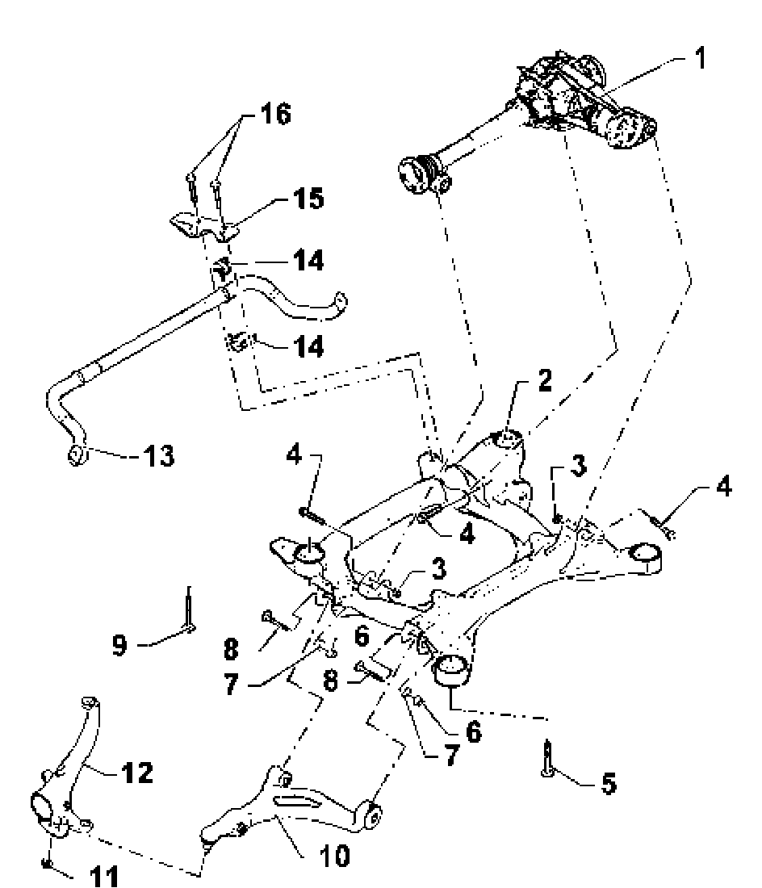

Front Subframe: Locations
I - Subframe, stabilizer bar, lower control arm, assembly overview
Note:
^ When a component with a bonded rubber mounting is replaced or nuts/bolts on these components are loosened, the wheel bearing in question must be moved to the curb weight position before they are tightened.

1. Final drive
^ Removal and installation
go to Final drive removing and installing.
2. Subframe
^ Removing and installing go to Subframe: Service and Repair.
3. Self-locking nut
^ M12 x 1.5
^ Always replace
4. Hex bolt
^ M12 x 1.5 x 90
^ 90 Nm plus an additional 1/4 turn (90°)
^ Always replace
5. Hex bolt
^ M14 x 1.5 x 115
^ 120 Nm plus an additional 1/2 turn (180°)
^ Always replace
6. Self-locking nut
^ M14 x 1.5
^ 180 Nm
^ Always replace
7. Eccentric washer
8. Eccentric bolt
9. Hex bolt
^ M14 x 1.5 x 150
^ 120 Nm plus an additional 1/2 turn (180°)
^ Always replace
10. Lower control arm
^ Tapered pin must be free of oil and grease
^ If necessary, clean with a dry cloth, do not use cleaning solvent.
11. Self-locking nut
^ M14 x 1.5
^ 105 Nm
^ Always replace
12. Wheel bearing housing
^ Tapered holes must be free of oil and grease
^ If necessary, clean with a dry cloth, do not use cleaning solvent.
^ Different versions for 16" and 17/18" wheels
13. Stabilizer bar
14. Rubber bushing
15. Clamp
16. Hex bolt
^ M10x20
^ 60 Nm